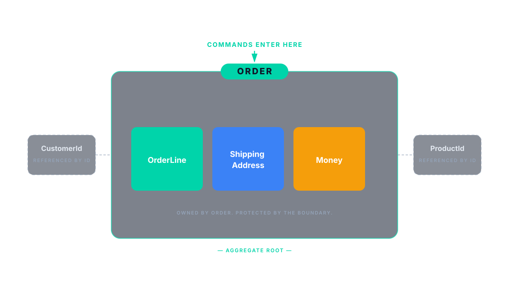
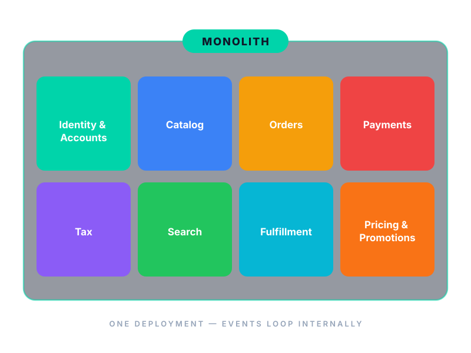
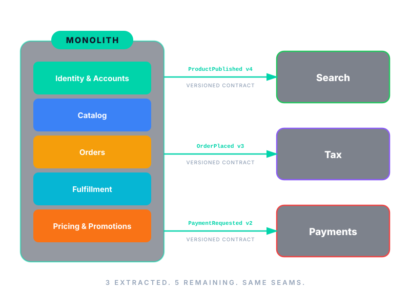
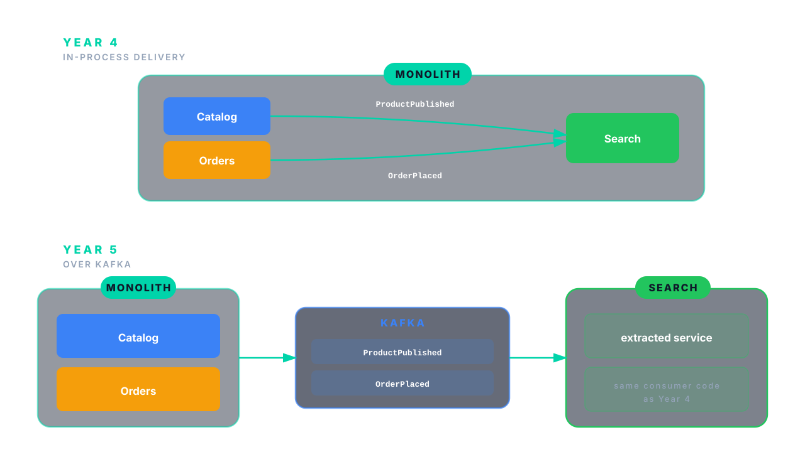
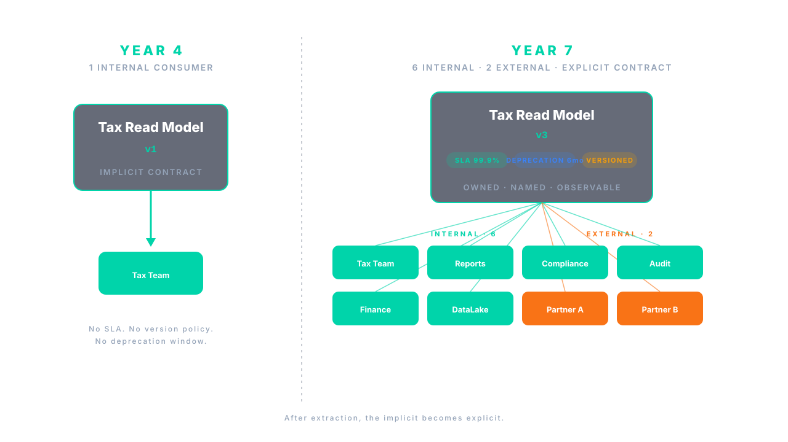
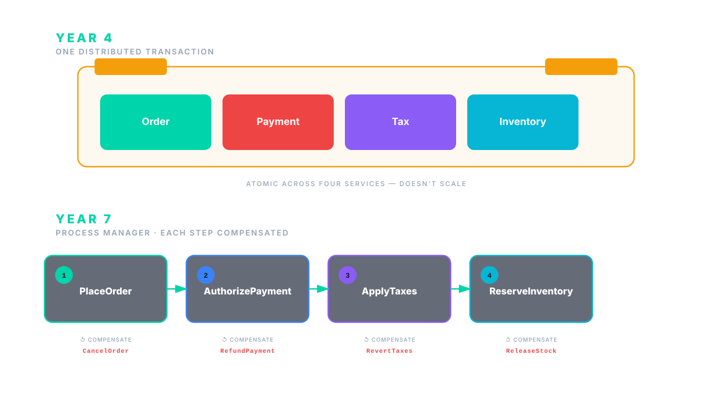
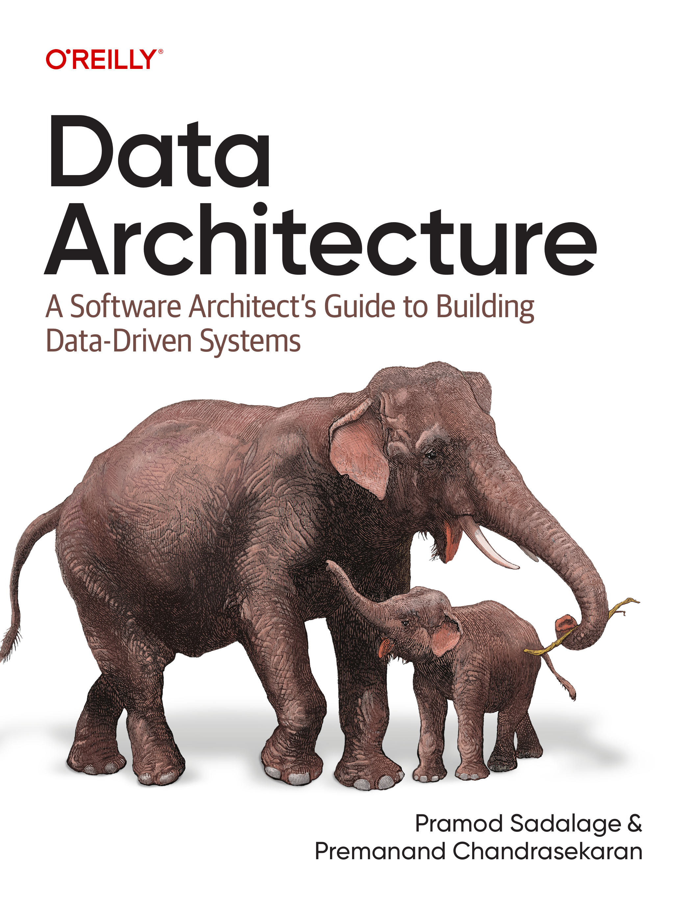

Six years of monolith. Eighteen months of microservices.
Same engineers. Same data. Different outcome.
Architecture endures when teams align on data lifecycles, not just APIs.
Five disciplines · we'll walk all of them
🙋Raise your hand if none of these are true in your ecosystem.
It starts at the schema
Writes to any table are allowed.
No persistence-layer gatekeeper.
Cross-domain joins in hot paths.
Read paths span domains.
Retention rules vary across teams.
Per-team, per-table policies.
Shared database. Different vocabularies.
One schema, multiple consuming teams.
01·Ownership

01·Ownership
Somewhere in the tax codebase…
var order = orderRepo.findById(id);
if (order.state() != DRAFT)
throw new IllegalStateException();
var subtotal = order.lines().stream()
.map(l -> l.price().multiply(l.qty()))
.reduce(ZERO, BigDecimal::add);
order.lines().forEach(l -> {
var rate = rateFor(order.address());
l.setTaxRate(rate);
l.setTaxAmount(l.price().multiply(rate));
});
order.setSubtotal(subtotal);
order.setState(TAXED);
orderRepo.save(order);
orderService.applyTaxes(
orderId, taxBreakdown);
Tell, don't ask.
02·Contracts
02·Contracts
-- private to orders-team
CREATE TABLE orders (
order_id UUID PRIMARY KEY,
customer_id UUID NOT NULL,
state order_state NOT NULL,
placed_at TIMESTAMPTZ NOT NULL,
currency CHAR(3) NOT NULL,
total_minor BIGINT NOT NULL,
fraud_score SMALLINT, -- internal
channel TEXT,
channel_meta JSONB, -- internal
fulfillment_id UUID,
ml_segment TEXT, -- internal
updated_at TIMESTAMPTZ NOT NULL
);
CREATE TABLE order_lines ( ... );
CREATE TABLE order_status_log ( ... );
CREATE INDEX ON orders (customer_id, placed_at DESC);
syntax = "proto3";
package penultimate.orders.events.v3;
// Owner: orders-team
// Compatibility: BACKWARD (Buf in CI)
message OrderPlaced {
reserved 9, 10; // removed: discount_code, promo_id
string order_id = 1;
string customer_id = 2;
int64 placed_at_ms = 3;
string currency = 4;
Address shipping = 5;
repeated OrderLine lines = 6;
Money total_amount = 7;
Source source = 8;
optional string idempotency_key = 11;
}
// internal-only fields excluded:
// fraud_score, channel_meta, ml_segment
Versioned. Owned by orders-team. Published with a guarantee.
03·CI fitness
Discipline is not a wiki page.
It's CI exit code 1.
03·CI fitness
@AnalyzeClasses(packages = "com.penultimate")
public class DataBoundaryFitnessFunctions {
@ArchTest
static final ArchRule no_cross_domain_persistence_access =
noClasses().that().resideInAPackage("..tax..")
.should().accessClassesThat()
.resideInAPackage("..orders.persistence..")
.because("Tax reads OrderPlaced events. Tax does not query Order's tables.");
@ArchTest
static final ArchRule writes_only_via_aggregate_root =
noClasses().that().resideOutsideOfPackage("..orders.domain..")
.should().callMethod(OrderRepository.class, "save", Order.class)
.because("Order's invariants live in Order. No exceptions.");
@ArchTest
static final ArchRule events_versioned_and_immutable =
classes().that().areAnnotatedWith(DomainEvent.class)
.should().haveSimpleNameEndingWith("V1")
.orShould().haveSimpleNameEndingWith("V2")
.andShould().haveOnlyFinalFields();
}
Three rules. One CI build. The four failure modes — blocked at the door.
03·CI fitness
Schema migration linter
Expand / contract enforcement.
Contract stability test
Pact, schema-registry compatibility.
Cross-aggregate join detector
SQL log analysis or query plan inspection.
Event schema validation
In CI, against registry.
Lifecycle / retention assertions
Per-table TTL declared, enforced.
+
your next one
04·Safe migrations
Every step is reversible. None of them is a flag day.
Add the new column nullable. Dual-write from the app.
Drop the column. Old reads were never touched.
Populate new column from old. Idempotent, restartable.
Re-run. Or pause and resume; the script is a fact, not a flag.
Reads move to the new column behind a feature flag.
Flip the flag back. Both columns still hold the truth.
Stop writing the old column. Drop it in a later deploy.
Only safe once no reader has touched old for a full retention window.
Enforced in CI: an Expand without its Contract is a failed build.
05·Decompose along seams
The monolith doesn't fail.
It stops fitting.
05·Decompose along seams
Decomposition didn't start with a plan. It started with incidents.
Catalog publish p99 hit 800 ms.
Search team needed regional read replicas — fast.
Audit flagged tax record retention drift.
Tax team needed immutable, append-only storage — for seven years.
Payments outage cascaded to checkout.
Payments team needed an isolated failure domain — and a stricter SLA.
05·Decompose along seams
Search
Tax
Payments
Consistency
Latency
Retention
Isolation
→ Cache at the edge.
→ Append-only ledger.
→ Bulkhead for blast radius.
05·Decompose along seams


05·Decompose along seams

05·Decompose along seams

05·Decompose along seams

05·Decompose along seams
Duplication owned by a contract is not debt.
It's autonomy.
Tax keeps its own copy of order line items. Search keeps its own denormalized catalog projection. Both update from events; both own their schema.
05·Decompose along seams
// Year 4 rule:
// "Tax doesn't access Order's persistence package."
// Year 7 rule:
@ArchTest
static final ArchRule tax_only_consumes_versioned_order_events =
classes().that().resideInAPackage("..tax.consumer..")
.should().onlyDependOnClassesThat()
.areAnnotatedWith(VersionedDomainEvent.class)
.because("Tax consumes events. Tax does not call Order's APIs.");
Schema boundary → service boundary. Same shape, bigger blast radius.
05·Decompose along seams
Each one obvious, because the seams were already drawn in the data.
Aggregates become extraction boundaries.
Search extracted. Same code, different transport.
Read models become published products.
Tax extracted. Contracts gain owner, SLA, deprecation window.
Process managers replace transactions.
Payments extracted. Sagas with explicit compensation.
Duplication becomes intentional.
Tax and Search own their projections; events keep them fresh.
No flag day. No big rewrite. The seams led — the team followed.
In 2026
The cost compounds.
Agent tools
over-expose data through naively converted APIs.
AI-assisted code
privilege-escalation paths. +153% design flaws.
Commit volume
more commits in fewer, larger PRs. Review attention didn't scale.
AgentRaft 2026 · Apiiro Fortune 50 telemetry 2025
AI doesn't change the principles.
It compounds the cost of getting them wrong.

Want the deep version?
Encode ownership.
Which team owns which aggregates? Write it down this week.
Publish contracts.
Events and read models, versioned and owned.
Verify in CI.
Fitness functions for boundaries, contracts, migrations.
Make migrations safe by design.
Expand, then contract. Always.
Decompose along seams when lifecycle pulls.
Not when traffic pulls. Not when fashion pulls.
Your monolith will stay modular longer.
Your decompositions will be evolutionary, not traumatic.
What that looked like at Penultimate
Year 4 → Year 7. Same headcount. Same teams.
Thank you.